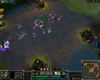
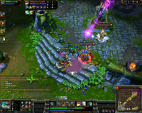
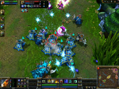

League of Legends
Dieser Artikel wurde für die folgenden Ubuntu-Versionen getestet:
Ubuntu 14.04 Trusty Tahr
Zum Verständnis dieses Artikels sind folgende Seiten hilfreich:
League of Legends  ist ein Strategiespiel von RIOT Games
ist ein Strategiespiel von RIOT Games  , inspiriert durch die Warcraft III-Modifikation DOTA (Defense of the Ancients). Einige der Entwickler von League of Legends haben sogar früher an DOTA mitgearbeitet. Das Spiel ist kostenlos, man kann sich jedoch zusätzliche Bezahlpunkte kaufen, mit denen man im Spiel z.B. Skins erwerben kann.
, inspiriert durch die Warcraft III-Modifikation DOTA (Defense of the Ancients). Einige der Entwickler von League of Legends haben sogar früher an DOTA mitgearbeitet. Das Spiel ist kostenlos, man kann sich jedoch zusätzliche Bezahlpunkte kaufen, mit denen man im Spiel z.B. Skins erwerben kann.
Das Spiel gibt es zwar nur für Windows und OS X, aber mit einigen Kniffen kann League of Legends auch unter Linux mit Wine [2] ausgeführt werden.
|  |  |  |
| Spielszene | Spielszene | Spielszene |
Bekannte Probleme¶
Falls League of Legends mit Wine ausgeführt wird, ist der Shop nicht benutzbar; beim Öffnen wird nur ein schwarzes Fenster angezeigt.
Einige Icons im Shop werden außerdem nicht korrekt angezeigt.
Manchmal bleibt der Launcher beim Start bei dem Check der Updates hängen, wiederholtes Starten behebt dieses Problem jedoch.
Außerdem kann es während des Spiels durch bestimmte Tastenkombinationen mit Alt zu Abstürzen kommen.
Installation¶
Es gibt zwei Möglichkeiten zur Installation von League of Legends, wobei beide Wine verwenden. Die erste Möglichkeit ist, Wine selbst zu kompilieren, bei der zweiten Variante wird PlayOnLinux, ein Frontend für Wine, verwendet.
Kompilieren von Wine¶
Die Installation gestaltet sich recht kompliziert, da Wine wegen zwei notwendigen Patches selbst kompiliert werden muss. Sicherheitshalber sollte vorher, falls bereits eine Version von Wine installiert ist, diese entfernt werden.
Dann wird zunächst der Quelltext einer aktuellen Wine-Version (mindestens 1.1.44) von SourceForge  heruntergeladen; die Datei hat die Endung .tar.bz2. Diese wird nun in ein beliebiges Verzeichnis entpackt [3].
heruntergeladen; die Datei hat die Endung .tar.bz2. Diese wird nun in ein beliebiges Verzeichnis entpackt [3].
Nun müssen die Build-Abhängigkeiten für Wine installiert werden. Am einfachsten geht das über das Terminal [1] mit folgendem Befehl:
Befehl zum Installieren der Build-Abhängigkeiten:
sudo apt-get build-dep wine
sudo aptitude build-depends wine
Zum Erstellen des Debianpaketes werden außerdem noch folgende Pakete benötigt:[5]
checkinstall (universe)
cabextract (universe)
 mit apturl
mit apturl
Paketliste zum Kopieren:
sudo apt-get install checkinstall cabextract
sudo aptitude install checkinstall cabextract
Als nächstes werden die beiden Patches ole-force-inproc-instead-of-local.patch und steam-store-crypt2.patch heruntergeladen und im entpackten Wine-Verzeichnis platziert. Im Terminal [1] werden diese Patches nun angewendet:
cd /PFAD/ZUM/ENTPACKTEN/WINE/VERZEICHNIS patch -p1 < ole-force-inproc-instead-of-local.patch patch -p1 < steam-store-crypt2.patch
Nun muss Wine noch mit der Standardmethode [4] kompiliert werden.
Allerdings benötigt League of Legends noch einige Zusatzprogramme, die noch nicht mit Wine mitgeliefert werden. Am einfachsten werden diese mit winetricks installiert. Es empfiehlt sich die Nutzung eines eigenen Wineprefixes [2], um die Standard-Wine-Konfiguration intakt zu lassen:
wget http://www.kegel.com/wine/winetricks WINEPREFIX=~/.wine/LoL sh winetricks adobeair vcrun2005 ie6 d3dx9
Installation von League of Legends¶
Jetzt lädt man das Setup von League of Legends (loleusetup.exe) kostenlos herunter, zum Beispiel von exp.de . Von der offiziellen Seite wird der Download nicht empfohlen, da es dort nur ein Download-Programm gibt, was u.U. nicht sonderlich gut mit Wine funktioniert.
Mithilfe der Datei loleusetup.exe kann League of Legends ganz normal mit Wine [2] installiert werden:
WINEPREFIX=~/.wine/LoL wine "/Pfad/Zu/loleusetup.exe"
Konfiguration¶
League of Legends ist jetzt installiert und kann über das Menu gestartet werden; jedoch ist die Performance vermutlich wegen eines weiteren Fehlers in Wine nicht sonderlich gut. Diesen Fehler kann man aber einfach beheben, indem die Konfigurationsdatei des Spiels bearbeitet wird. Man öffnet die Datei GAME.CFG im Unterordner Game/DATA/CFG/Defaults des Installationsordners von League of Legends mit einem Editor [6].
Im Abschnitt "[MouseOverEffect]" wird die Zeile "Style = 2" auf "Style = 0" gesetzt. Außerdem wird jeweils in den Abschnitten "[FriendlyNametag]", "[EnemyNametag]" und "[PlayerNametag]" die Zeile "Glow = 2" auf "Glow = 0" gesetzt.
Beim nächsten Start des Spiels sollte es nun mit guter Performance und weitestgehend ohne Grafikfehler laufen.
Installation mit PlayOnLinux¶
Diese Installation ist entgegen der ersten Methode sehr einfach, da sie grafisch erklärt ist.
Nachdem PlayOnLinux installiert wurde, öffnet man das Programm und wählt "Installieren" und sucht unter "Testen" nach "League Of Legends". Der Installations-Guide leitet nun durch die Installation.
Problembehebung¶
Kein Sound¶
Falls im Spiel kein Ton ausgegeben wird, sollte es helfen, eine Einstellung in Wine mittels winecfg zu machen [1]:
winecfg
Im sich öffnenden Fenster wählt man den Reiter "Bibliotheken", schreibt mmdevapi in das Feld "Neue Überschreibung für" und klickt auf "Hinzufügen". Nun wird in der Liste "mmdevapi" ausgewählt und mittels des "Bearbeiten"-Knopfes auf "Ausschalten" gesetzt.
Andere Anleitung¶
Quelle
Zuerst muss Wine installiert werden, bevorzugt die neuste Version (derzeit 1.7) und das ganze in der 32bit Variante, da .net hierbei besser funktioniert:
sudo add-apt-repository ppa:ubuntu-wine/ppa sudo apt-get update sudo apt-get install wine1.7:i386 sudo apt-get install winetricks:i386
nach der Installation müssen wir ein Paar winetricks einrichten:
winetricks winxp winetricks d3dx9 vcrun2005 vcrun2008 wininet corefonts
Anschließend wird noch ein Patch für den League of Legends Ordner benötigt: TuxLoL
Nun installieren wir noch mono, falls dies nicht schon vorhanden ist:
sudo apt-get install mono
und patchen mit TuxLoL unseren League of Legends Ordner:
mono tuxlol.exe patch --dir "/home/USER/.wine/dosdevices/c:/Program Files/Riot Games/League of Legends"
Nun kann man ganz einfach im League of Legends Ordner die lol.launcher.exe starten, entweder mit Doppelklick oder mit einem:
wine lol.launcher.exe


- Erstellt mit Inyoka
-
 2004 – 2017 ubuntuusers.de • Einige Rechte vorbehalten
2004 – 2017 ubuntuusers.de • Einige Rechte vorbehalten
Lizenz • Kontakt • Datenschutz • Impressum • Serverstatus -
Serverhousing gespendet von